เนื้อหาบทนี้ใช้ได้กับผู้ดูแลระบบ อาจารย์ และผู้ช่วยสอนทุกคน เนื่องจากหน้าตั้งค่าบัญชีเป็นหน้าเดียวกันทุกบทบาท ส่วนการเข้าสู่ระบบของนักศึกษาก็ใช้หลักการเดียวกัน เพียงแต่แยกหน้าเข้าสู่ระบบต่างหาก
2.1 การเข้าสู่ระบบ#
เป้าหมายของขั้นตอนนี้ เข้าสู่ระบบด้วยช่องทางที่ถูกต้องของบทบาทและโดเมนที่ท่านใช้งานอยู่
- เปิดเว็บเบราว์เซอร์ไปที่โดเมนหลักของระบบ ระบบจะแสดงหน้าเข้าสู่ระบบ
- คลิกปุ่ม KKU SSO ซึ่งเป็นปุ่มหลักที่แสดงอยู่บนสุด เพื่อเข้าสู่ระบบด้วยบัญชี KKU Mail ผ่านระบบยืนยันตัวตนกลางของมหาวิทยาลัย (ใช้ช่องทางเดียวกันทุกบทบาท)
- (นักศึกษา) ใช้ปุ่ม ล็อกอินนักศึกษา ที่มุมขวาบนของหน้าแรกเพื่อไปยังหน้าเข้าสู่ระบบฝั่งนักศึกษาโดยตรง ซึ่งมีปุ่ม KKU SSO เป็นปุ่มหลักเช่นเดียวกัน
คู่มือฉบับก่อนหน้าระบุว่าปุ่ม Google หรือ GitHub เป็นช่องทางหลัก ปัจจุบันไม่ใช่แล้ว KKU SSO เป็นช่องทางหลักของทุกบทบาทตามประกาศของคณะ ส่วน Google เหลือเป็นทางเลือกสำรองเท่านั้น (ดูข้อ 2.1.1) และ GitHub ปิดใช้งานเป็นค่าเริ่มต้น
2.1.1 เมื่อ KKU SSO ใช้ไม่ได้ชั่วคราว#
ระหว่างที่สำนักเทคโนโลยีดิจิทัลของมหาวิทยาลัยยังปรับปรุงข้อมูลบัญชีให้ครบทุกคน บางบัญชีอาจยังเข้าสู่ระบบผ่าน KKU SSO ไม่ได้ ระบบจึงเปิดปุ่ม Google ไว้เป็นทางสำรองชั่วคราวบนโดเมนหลักด้วย
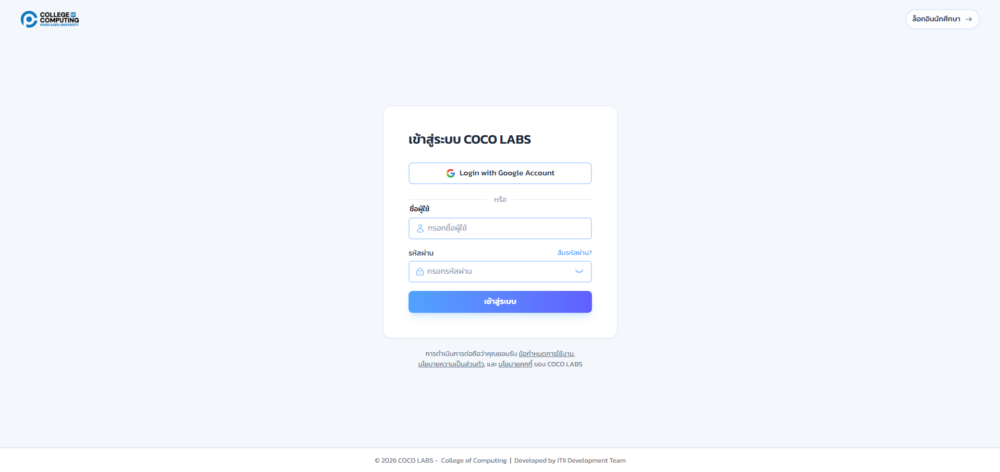
ภาพชั่วคราว ยืมจากภาพหน้าล็อกอินโดเมนสำรอง รอถ่ายภาพจริงจากโดเมนหลัก
ปุ่ม Google สำรองนี้เป็นมาตรการชั่วคราวระหว่างรอสำนักฯ ปรับปรุงข้อมูล เมื่อข้อมูลครบแล้วปุ่มนี้จะถูกถอดออก กรุณาใช้ KKU SSO เป็นหลักเสมอเมื่อเข้าสู่ระบบได้ตามปกติ
หากเข้าถึงโดเมนหลักของมหาวิทยาลัยไม่ได้เลย ระบบมีโดเมนสำรอง cocolab.osp101.com ให้ใช้แทน โดเมนสำรองนี้ใช้ Google เป็นช่องทางหลัก ไม่ใช่ KKU SSO เนื่องจาก Redirect URL ของ KKU SSO ที่ลงทะเบียนไว้กับสำนักฯ ผูกกับโดเมนหลักเท่านั้น
2.2 ข้อมูลส่วนตัวและรูปโปรไฟล์#
เป้าหมายของขั้นตอนนี้ แก้ไขข้อมูลส่วนตัวและรูปโปรไฟล์ของบัญชี
- คลิกรูปโปรไฟล์ที่มุมขวาบนของทุกหน้า แล้วเลือก ตั้งค่าโปรไฟล์
- คลิกปุ่ม อัปโหลดรูปใหม่ เพื่อเปลี่ยนรูปโปรไฟล์ (รองรับ JPG, PNG, GIF ขนาดไม่เกิน 5MB)
- แก้ไข ชื่อ-นามสกุลและอีเมล แล้วกด บันทึกการเปลี่ยนแปลง (ชื่อผู้ใช้ Username แก้ไขไม่ได้)
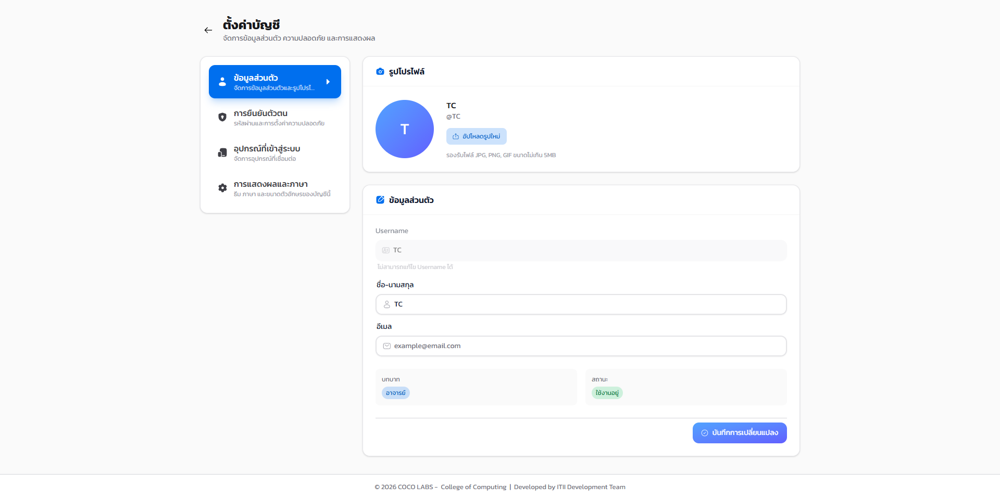

ไฟล์รูปที่เกินขนาดหรือผิดชนิดจะถูกปฏิเสธพร้อมข้อความแจ้งเตือน กรุณาตรวจสอบขนาดไฟล์ก่อนอัปโหลด
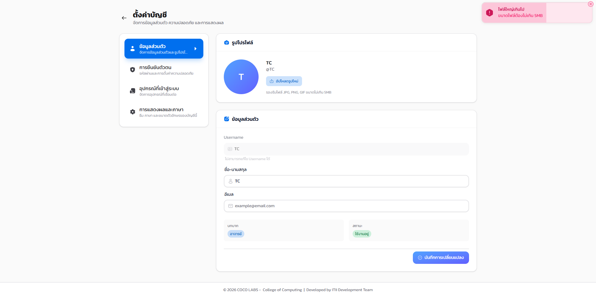
2.3 การยืนยันตัวตนสองชั้น (2FA)#
เป้าหมายของขั้นตอนนี้ เปิดใช้การยืนยันตัวตนสองชั้นเพื่อเพิ่มความปลอดภัยของบัญชี
- ที่เมนู การยืนยันตัวตน คลิกปุ่ม ตั้งค่า 2FA
- เลือกวิธียืนยัน ระหว่างแอป Authenticator (TOTP) หรือรหัสทางอีเมล
- หากเลือกแอป Authenticator ให้สแกน QR ที่ปรากฏด้วยแอปยืนยันตัวตนของท่าน แล้วกรอกรหัส 6 หลักที่แอปสร้างขึ้นเพื่อยืนยัน
- บันทึก รหัสสำรอง (Backup Codes) ที่ระบบสร้างให้ไว้ในที่ปลอดภัย ใช้แทน 2FA ได้กรณีทำอุปกรณ์ยืนยันตัวตนหาย
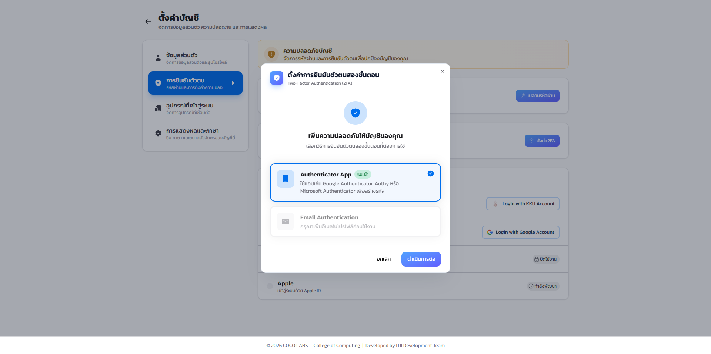
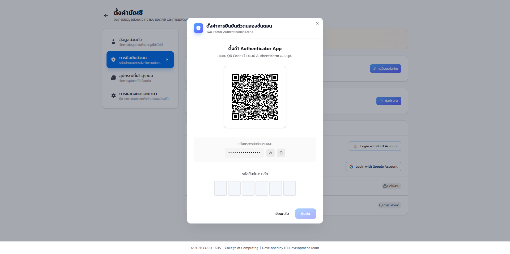
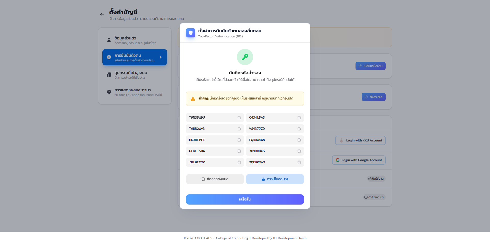
- ปุ่มสร้างรหัสสำรองใหม่
- ใช้เมื่อรหัสสำรองชุดเดิมถูกใช้ไปมากแล้วหรือทำหาย ระบบจะยกเลิกชุดเดิมทันทีที่สร้างชุดใหม่
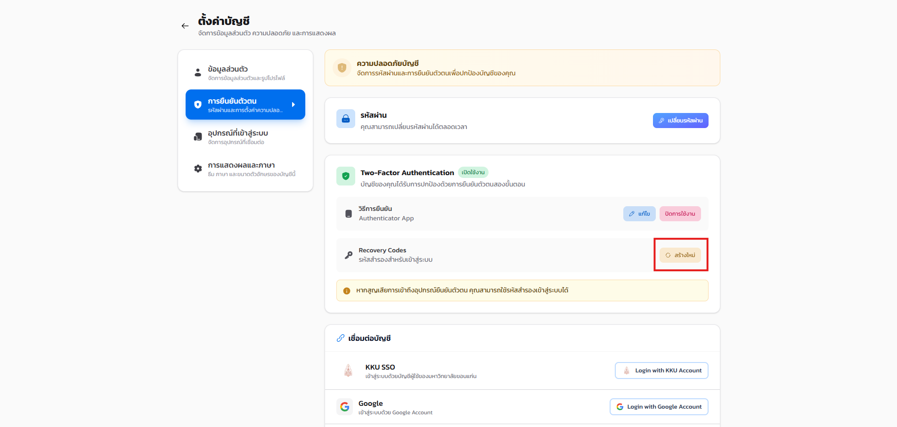
สำหรับผู้ดูแลระบบ การเปิด 2FA จำเป็นเป็นพิเศษ เพราะการดำเนินงานสำคัญของระบบ (สำรอง/กู้คืนข้อมูล แก้ไข Feature Flags ล้างบันทึกระบบ) ต้องยืนยันรหัส 2FA ซ้ำทุกครั้งตามหลักการ Step-up 2FA หากยังไม่เปิด 2FA จะทำรายการเหล่านั้นไม่ได้เลย ดูตัวอย่างในข้อ 2.9
2.4 การเชื่อมต่อบัญชี#
เป้าหมายของขั้นตอนนี้ ผูกหรือยกเลิกการผูกบัญชีภายนอกเข้ากับบัญชีนี้ เพื่อเข้าสู่ระบบได้โดยไม่ต้องกรอกรหัสผ่าน
ที่เมนู การยืนยันตัวตน ส่วน เชื่อมต่อบัญชี แสดงผู้ให้บริการทั้ง 4 ราย
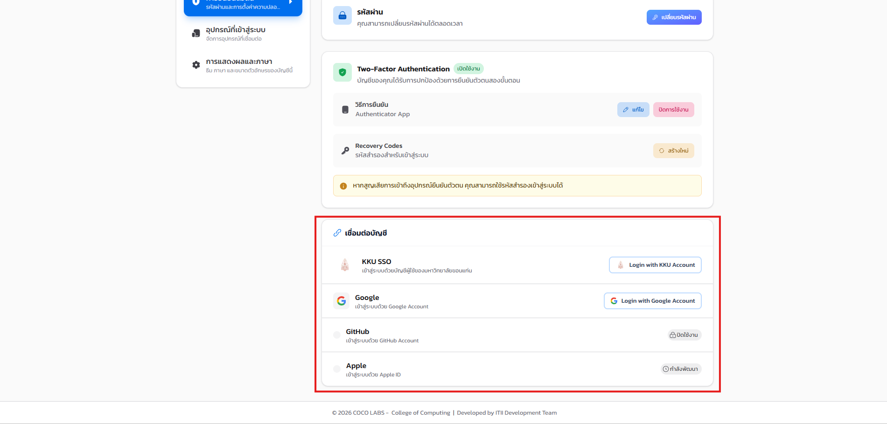
- KKU SSO
- เชื่อมต่อได้ตามปกติ เป็นช่องทางหลักของระบบ
- เชื่อมต่อได้ ใช้เป็นทางสำรองตามที่อธิบายในข้อ 2.1.1
- GitHub
- ปิดใช้งานเป็นค่าเริ่มต้น ปุ่มเชื่อมต่อจะแสดงป้าย "ปิดใช้งาน" แทน
- Apple
- ยังไม่เปิดให้ใช้งาน ปุ่มแสดงป้าย "กำลังพัฒนา"
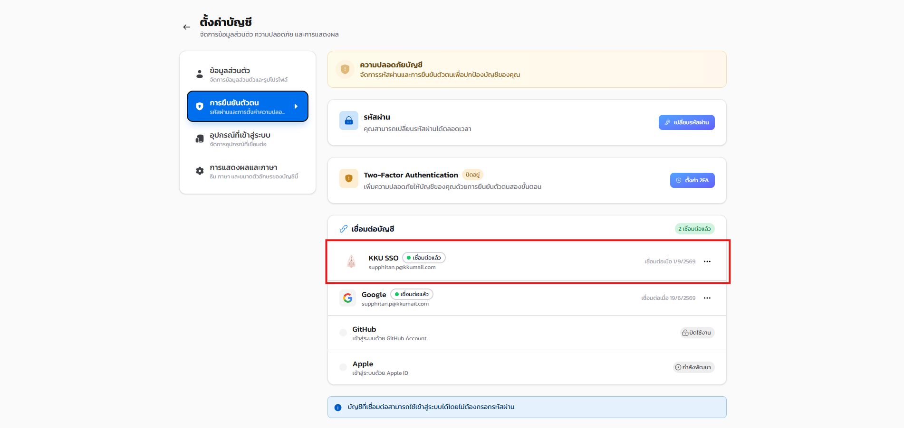
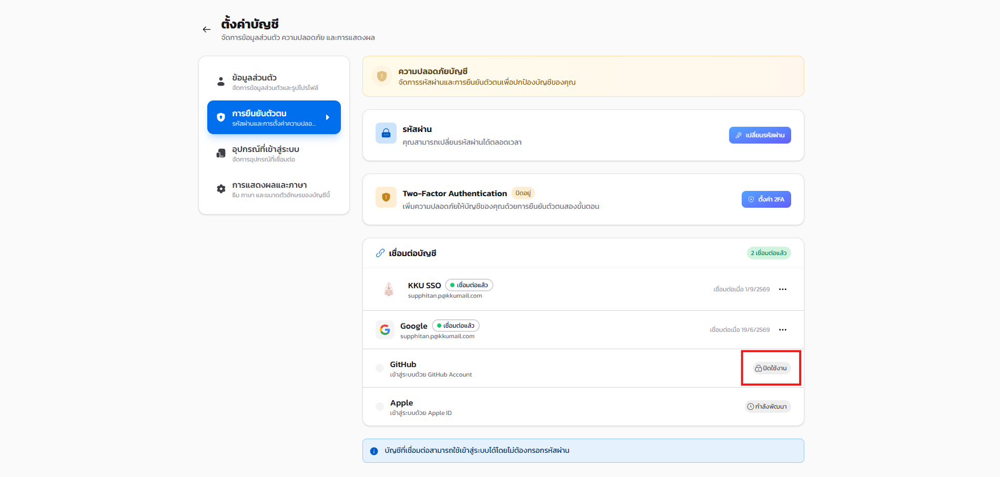
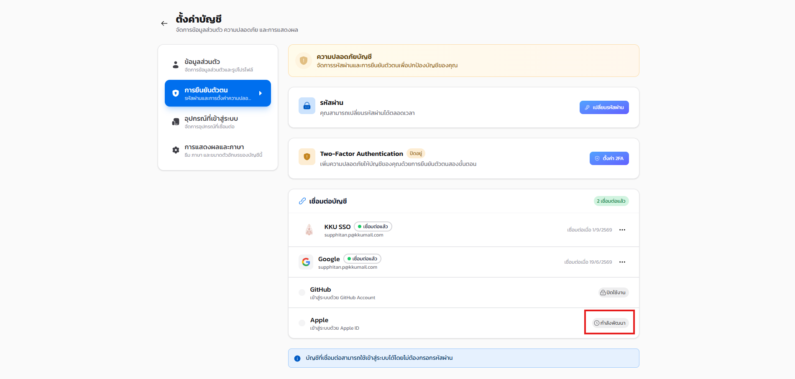
2.5 อุปกรณ์และเซสชันที่เข้าสู่ระบบ#
เป้าหมายของขั้นตอนนี้ ตรวจสอบอุปกรณ์ที่บัญชีนี้กำลังเข้าสู่ระบบอยู่ และเพิกถอนอุปกรณ์ที่ไม่รู้จัก
- ที่เมนู อุปกรณ์ที่เข้าสู่ระบบ ตรวจสอบรายการทั้งหมด หากพบอุปกรณ์ที่ไม่รู้จัก ให้คลิกไอคอนท้ายแถวเพื่อ เพิกถอนเซสชัน รายอุปกรณ์นั้น
- หากไม่แน่ใจว่ามีอุปกรณ์ใดหลุดออกไปบ้าง คลิกปุ่ม ออกจากระบบทั้งหมด เพื่อบังคับออกจากระบบทุกอุปกรณ์พร้อมกัน แล้วเข้าสู่ระบบใหม่เฉพาะอุปกรณ์ที่ใช้จริง
- รายละเอียดต่อรายการ
- ระบบปฏิบัติการ เบราว์เซอร์ IP และเวลาเข้าสู่ระบบ
- ป้าย "เซสชันปัจจุบัน"
- กำกับเซสชันของอุปกรณ์ที่ท่านกำลังใช้ดูหน้านี้อยู่
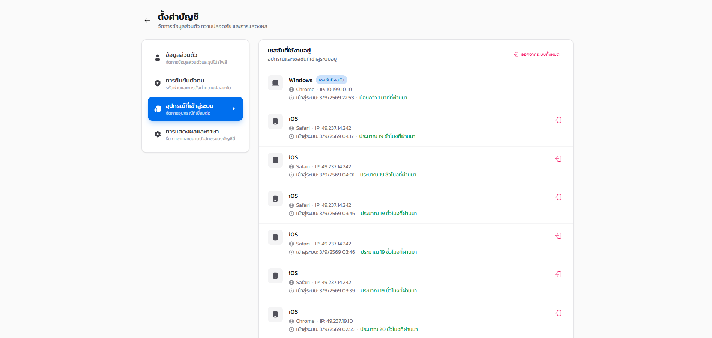
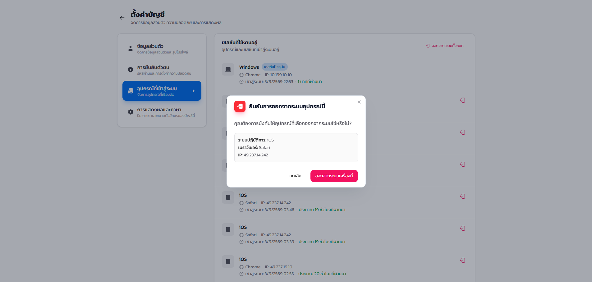
2.6 การแสดงผลและภาษา#
ที่เมนู การแสดงผลและภาษา ปรับ ธีม (ตามระบบ/สว่าง/มืด) ภาษา (ไทย/อังกฤษ) และ ขนาดฟอนต์ (เล็ก/กลาง/ใหญ่) ได้ตามความถนัด ระบบบันทึกการตั้งค่าเข้ากับบัญชีโดยอัตโนมัติ
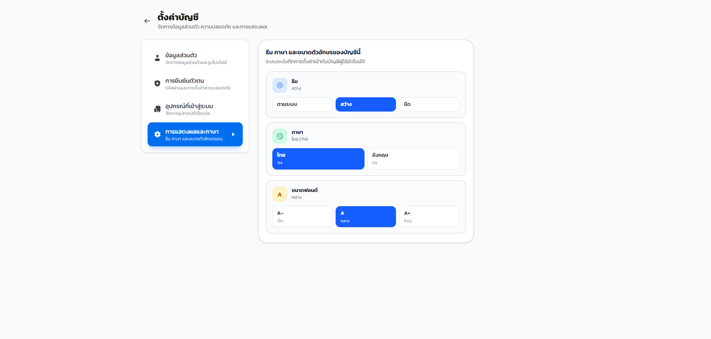
2.7 การแจ้งเตือน#
คลิกไอคอน กระดิ่ง ที่มุมขวาบนของทุกหน้า เพื่อเปิดกล่องการแจ้งเตือน ปุ่ม อ่านทั้งหมด ทำเครื่องหมายอ่านทุกรายการ และ ลบที่อ่านแล้ว ใช้เคลียร์รายการ แท็บ ทั้งหมด / ยังไม่ได้อ่าน ใช้กรองรายการ ประเภทการแจ้งเตือนครอบคลุมงาน การเช็กชื่อ คิว การแก้คะแนน และประกาศจากผู้ดูแลระบบ นอกจากนี้ระบบยังรองรับ Push Notification ที่แจ้งเตือนถึงอุปกรณ์แม้ไม่ได้เปิดหน้าเว็บอยู่ (ใช้ปลุกผู้ช่วยสอนเมื่อมีคิวใหม่ โดยระบบจะขออนุญาตเมื่อเริ่มรับงาน)

2.8 ศูนย์ช่วยเหลือ#
หน้า ศูนย์ช่วยเหลือ (ลิงก์ท้ายทุกหน้า) รวมคู่มือการใช้งาน คำถามที่พบบ่อย การตรวจสอบสถานะระบบ ช่องทางติดต่อทีมสนับสนุน และการแจ้งปัญหาความปลอดภัยไว้ในที่เดียว ผู้ใช้ทุกบทบาทรวมถึงบุคคลทั่วไปส่งคำขอสนับสนุนได้
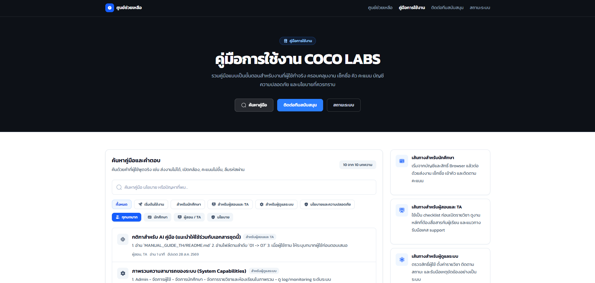
2.9 ตัวอย่างการยืนยันตัวตนซ้ำ (Step-up 2FA)#
เป้าหมายของขั้นตอนนี้ เข้าใจว่าทำไมบางรายการของผู้ดูแลระบบจึงขอรหัส 2FA ซ้ำ แม้เข้าสู่ระบบอยู่แล้ว
การกระทำสำคัญของผู้ดูแลระบบ เช่น การสั่งสำรองข้อมูลทันที การกู้คืนฐานข้อมูล การแก้ไข Feature Flags และการล้างบันทึกระบบ ต้องยืนยันรหัส 2FA ซ้ำอีกครั้งก่อนดำเนินการเสมอ เรียกว่า Step-up 2FA แม้ผู้ดูแลระบบจะเข้าสู่ระบบค้างไว้อยู่แล้วก็ตาม เป็นมาตรการป้องกันกรณีมีผู้ไม่หวังดีเข้าถึงเซสชันที่เปิดค้างไว้
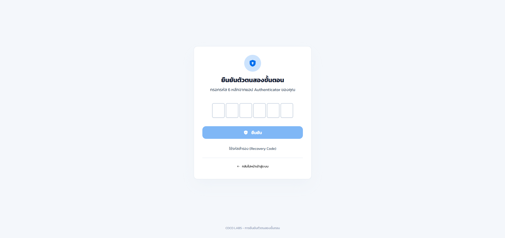
รายการที่บังคับ Step-up 2FA ในระบบขณะนี้ยังไม่ครอบคลุมทุกจุดที่ควรมี (เช่น การรีสตาร์ทบริการยังไม่ได้ผูกกับกลไกนี้ในบางเส้นทาง) ทีมพัฒนากำลังตรวจสอบให้ครบถ้วน หากพบว่าขั้นตอนสำคัญใดไม่ขอยืนยันซ้ำตามที่คาดไว้ ให้แจ้งผู้ดูแลระบบ